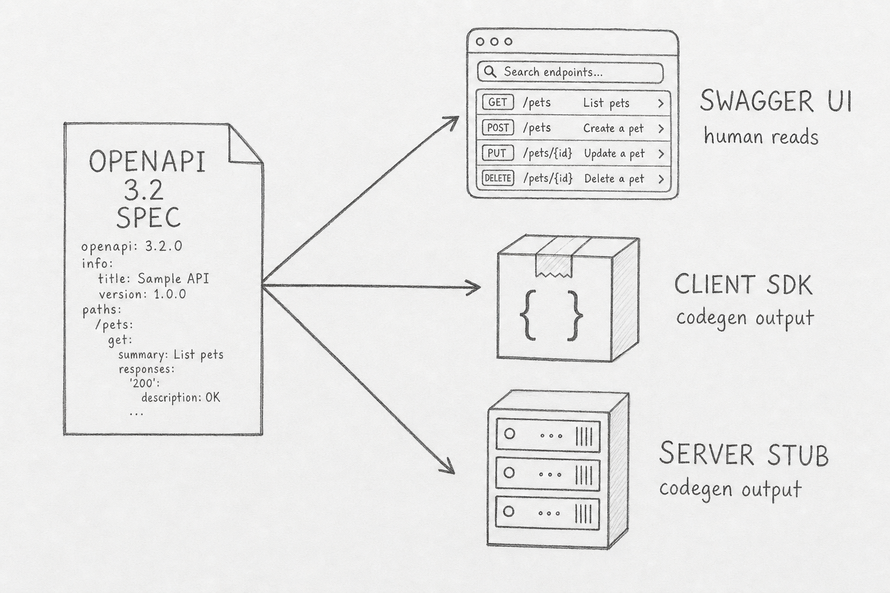

How OpenAPI Is Evolving for AI Agents
Every guide says the same thing: hand the agent your OpenAPI spec and it will figure out the rest. In practice, the agent loads the spec, the spec eats a third of the context window, and the agent picks the wrong endpoint anyway.
OpenAPI was built so humans could generate SDKs and read Swagger UI. Agents do neither. The shift happening across the spec ecosystem — OpenAPI 3.2, Arazzo, Model Context Protocol, llms.txt — is what happens when an old standard meets a new kind of consumer.
An OpenAPI document is a YAML or JSON file that describes every endpoint of a REST API: paths, parameters, request and response shapes, auth schemes. It is a machine-readable contract.

The toolchain is mature. OpenAPI 3.1 shipped in February 2021 and aligned the schema dialect with JSON Schema 2020-12. OpenAPI 3.2 followed in September 2025 with structured tag navigation, streaming media types, and additional OAuth flows. Both are designed for one audience: developers and the codegen pipelines they run.
Hand the same document to an agent and four things go wrong. Hover or tab through the boxes below to see each failure mode.
Tooling constraints make the picture sharper. Cursor caps agents at about forty tools with a sixty-character name limit. OpenAI's agent runtime accepts anyOf but not allOf or oneOf. A spec that works perfectly for codegen is unusable as-is.
The response is not a single replacement spec. It is a stack. Step through the four layers below to see how an agent traverses them in order.
Discovery comes first. llms.txt, proposed by Jeremy Howard in 2024, is a site-root markdown file that points LLMs at the highest-value content. It does not replace OpenAPI — it tells an agent where the spec lives.
Contract stays with OpenAPI. The next major version, codenamed Moonwalk, lists six design principles. One says descriptions must convey purpose "whether the consumer is a human or an AI." The OpenAPI Initiative is explicit, however, that Moonwalk has no planned end date and that 3.x is the version to use today.
Workflow is Arazzo. Released as 1.0 by the OpenAPI Initiative in 2024 with a 1.0.1 patch in January 2025, Arazzo describes deterministic sequences of API calls — the choreography OpenAPI never had. The official arazzo-cli ships with an MCP server so an agent can execute a named workflow as a single tool call.
Invocation is Model Context Protocol. Anthropic open-sourced MCP in November 2024 and donated it to the Agentic AI Foundation in December 2025. OpenAI, Google, Microsoft, and Salesforce now ship MCP support, and SDK downloads reached ninety-seven million per month by March 2026.
You do not need to wait for Moonwalk. Toggle between the two tabs below — annotating an existing spec is one move; exposing a dynamic discovery surface is the other.
If you own an API, treat description fields as task hints, not field labels. Mark idempotent operations explicitly. Write examples that mirror what an agent would actually try, not what a curl tutorial would show. Publish a curated subset of high-value operations alongside the full spec.
If you wrap an API for agents, do not turn every endpoint into a tool. The pattern Stainless ships in production — three meta-tools that list endpoints, fetch a schema on demand, and invoke a chosen endpoint — lets an agent discover the surface at runtime instead of paying the context cost upfront. For multi-step processes, ship an Arazzo workflow and expose it as a single MCP tool.
If you consume APIs as an agent author, read llms.txt first, prefer workflow tools over raw endpoints, and budget context as a scarce resource.
The OpenAPI document is no longer the only contract that matters. It still describes what the endpoints are, but the discovery, the workflow choreography, and the live invocation now live in their own specs — each evolved for a consumer that reads the contract, decides what to do, and acts in the same loop. The spec is not becoming AI-aware — the stack is.
References
- OpenAPI Initiative — Arazzo Specification.
- OAI — sig-moonwalk repository.
- Speakeasy — OpenAPI release notes.
- Stainless — Lessons from OpenAPI-to-MCP server conversions.
- SmartBear — From endpoints to intent: Arazzo and MCP.
- Wikipedia — Model Context Protocol.
- Mintlify — Real llms.txt examples.
- Imagine Works — MCP for enterprise leaders.
- Knak — MCP adoption in 2026.